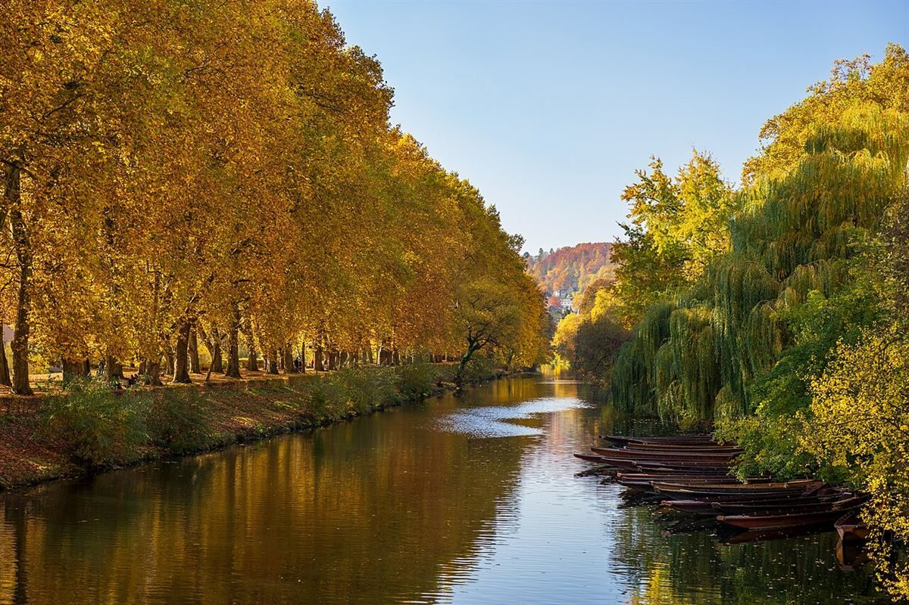

口コミ
いつか、の声
カフェという業種から自然に想像できる声を、制作側が創作したものです。
以下は制作側が考えた創作のイメージ例で、実在のお客様の投稿ではありません。実際の口コミ・評価とは関係ありません。
いつか行ってみたいお店です。まずはInstagramをのぞいて、どんなお店なのか知りたいと思います。
「tree」という店名が気になりました。近くに行く機会があれば、地図で場所を確かめてみたいです。
営業時間やメニューが分かったら、あらためて計画を立ててみたいです。それまでInstagramをのぞいてみます。
